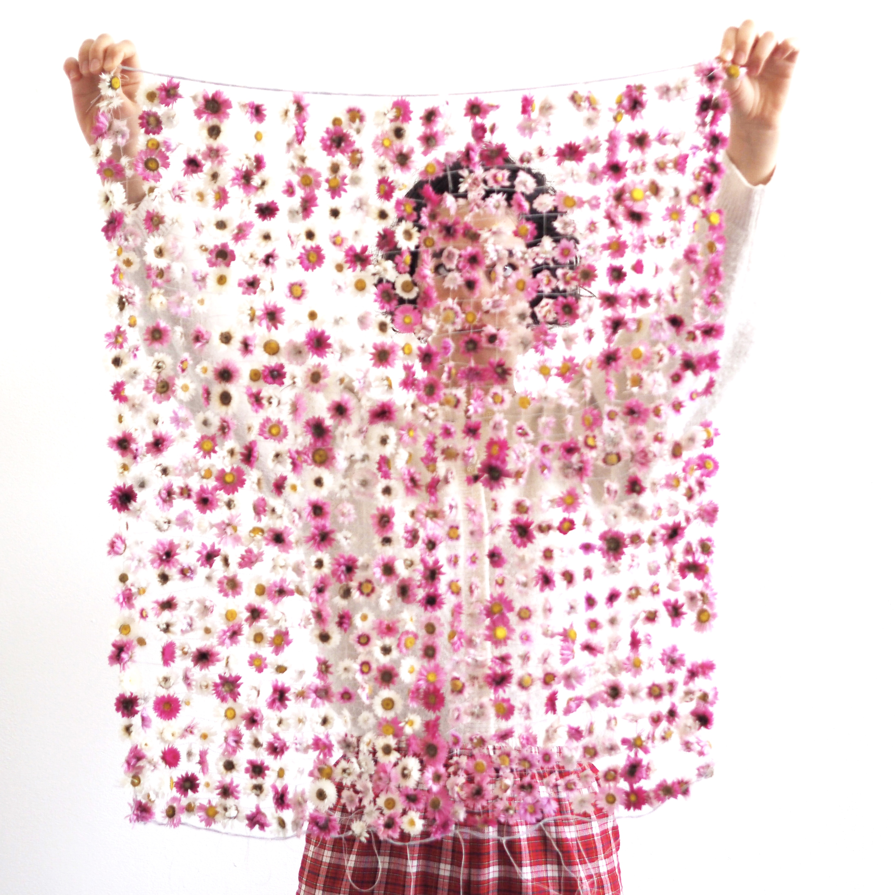

delphine.claire.bertrand@proton.me
visual artist
indoor landscape gardener
TEXT BY ELENA CARDIN
CURRICULUM VITAE
PROJECTS

* Untiteled (Fire Walk With Me), 2025

* Ici repose Lamour (Here lies Love), with the participation of Robert Kirov, 2024

* Le Bonheur (Happiness), 2022-2024

* Jouer (To Play), 2022
* La Chance (Luck), with Kahina Loumi, 2021

* Focul care Arde (The Fire that Burns), 2020

* La zone périlunaire (Lunar peripheral space), 2019

* Le chercheur d'or (The gold digger), 2018

* La Réserve (Reserve), during La Grande Diagonale, curated by Bruno Peinado, 2021
SOME OTHER WORKS

* Jardin d'hiver (Winter garden), during Essayer de la sculpture Studio Plijadur, 2020

* Selected installations works until 2018

* Selected sculptures works until 2018
PARTICIPATIONS IN PUBLICATIONS
* STANZE, Palomar projets, 2020
* La faim des haricots, Les Éditions du Motel, 2020
Various materials, audio speakers broadcasting a song composed by the artist Harilay Rabanjamina for the installation, text written along the trip from France to Romania, translate from French to Romanian and prints on sheets to take away
Timişoara French Institute, Romania
February 2019